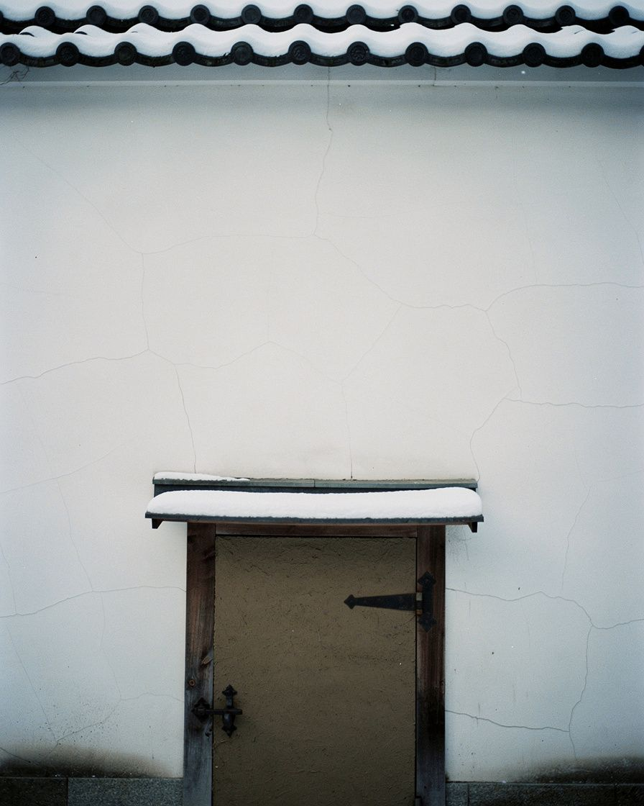
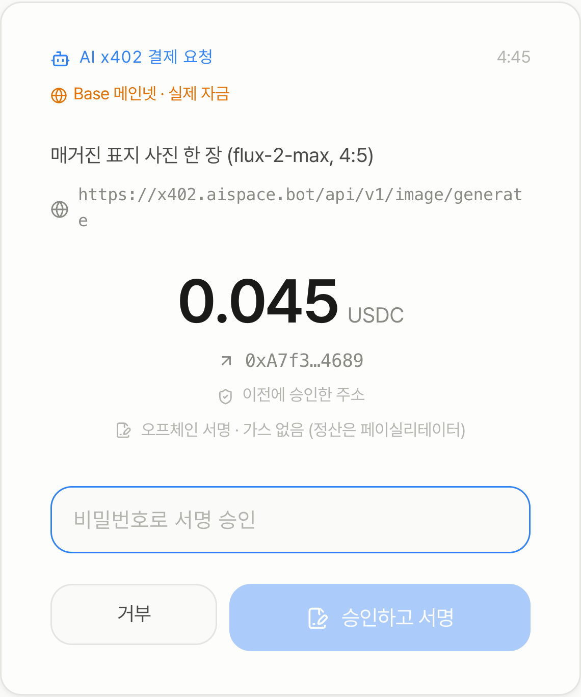
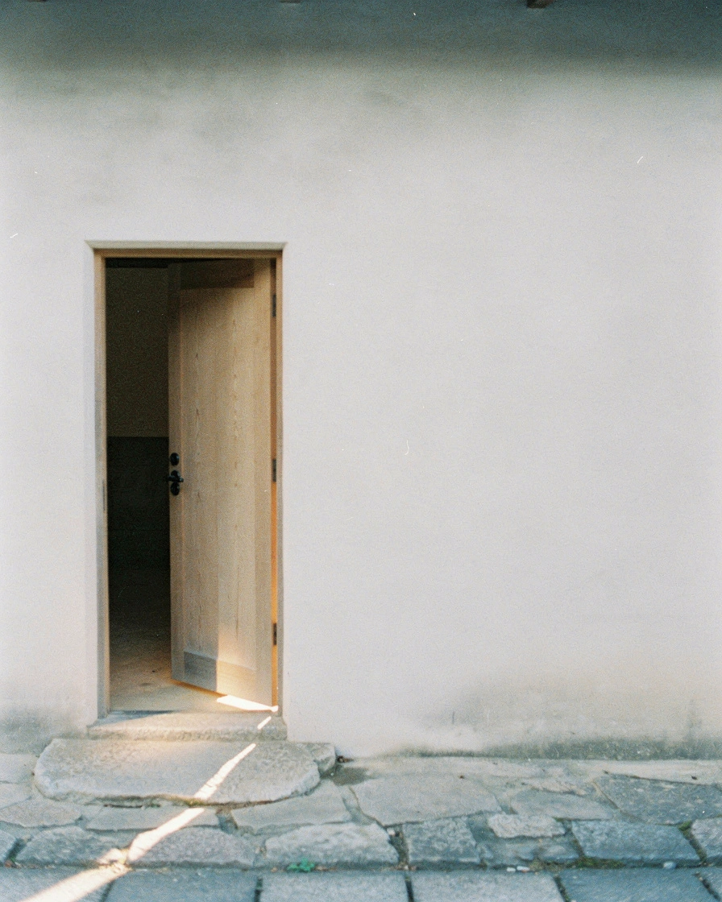

Claude에게
지갑을 맡겨 봤어요
이 글에 쓴 사진은 전부 Claude가 직접 사 왔어요.

이 글에 쓴 사진은 전부 Claude가 직접 사 왔어요.
지갑에 3 USDC를 넣고
「글에 쓸 사진을
구해 줄래요?」
이렇게만 부탁했어요. 가입도, API 키도 건네지 않았어요. Claude가 사진을 파는 곳을 찾아 값을 묻고, 지갑에 결제를 요청했어요.
이번엔 자동 결제를 꺼 두어서, 결제마다 맥에 이 창이 떴어요. 무엇을 사는지, 어디로 얼마가 가는지 보고 비밀번호를 넣어야 나가요.

비밀번호를 잘못 넣었더니 그 결제는 나가지 않았어요. 다시 넣고 나서야 사진 값이 나갔어요.

한 장에 0.045 USDC · Base 메인넷 · x402
AI 에이전트를 위한 맥용 로컬 지갑이에요.